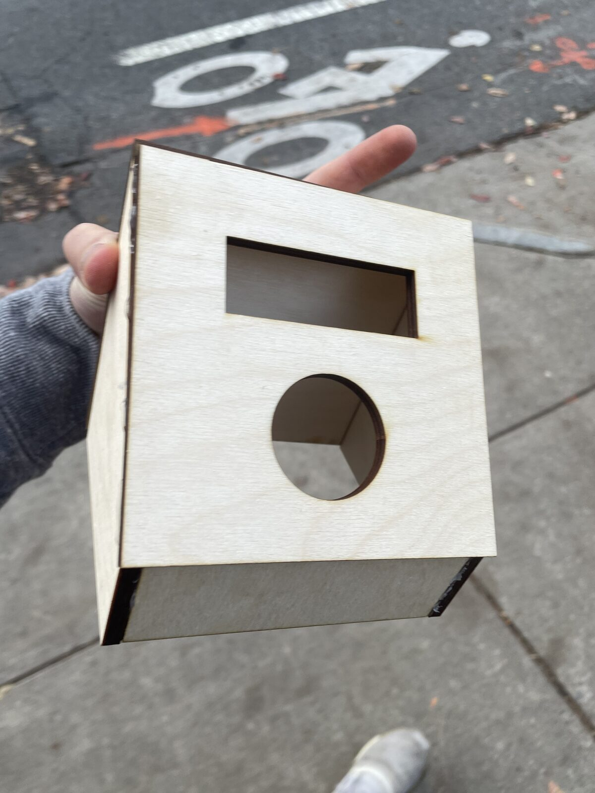

02
Gallery


← Projects / Project 03
An electromechanical punching bag rig, built to measure and display punch strength in real time using an accelerometer, LED lightstrip, and LCD screen.
Rated impact load
Score shown on LED strip and LCD
Accelerometer scoring on Arduino
Build a target and mounting structure that survives repeated 450+ N impacts without damaging the sensor or frame.
Designed and laser cut the target, braces, and spring mount in SolidWorks, then integrated an accelerometer, LED lightstrip, and LCD UI.
A working punching strength tester rated for 450+ N loads with real-time visual and audio feedback.
For our Cornerstone of Engineering I team project, we set out to build an electromechanical punching strength tester rated to withstand loads over 450 N — sturdy enough to take a full-force punch repeatedly without the structure or sensor mount failing.
I designed and laser cut the target, mounting braces, and electronics housing in SolidWorks, making sure that parts were sturdy enough to withstand repeated wear cycles from human punches. On the electronics side, I worked to convert accelerometer data into a scoring system to measure punch force, all driven with C++ on an Arduino.
The result is shown above: a user presses the start button, gets prompted to throw a punch, and sees their strength reflected instantly through the lightstrip and LCD readout — turning a raw accelerometer signal into immediate visual and audio feedback.
